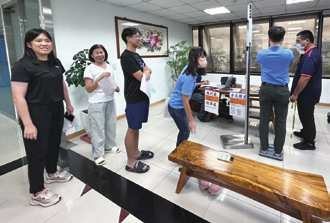
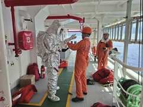
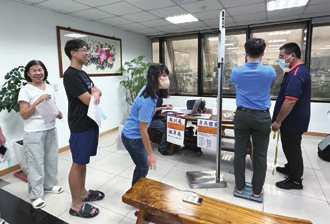
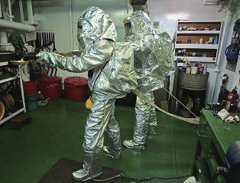
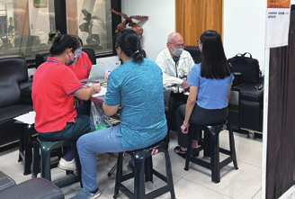
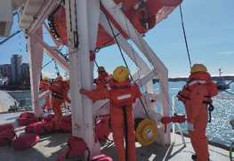
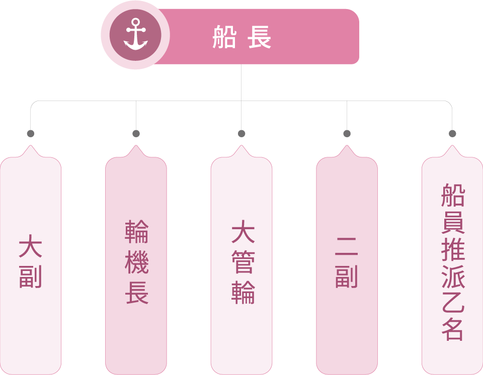

健康安全職場
正德海運制定岸端適用之職業安全衛生守則；船端適用之風險評估程序（FBP-07-13 Risk Assessment Procedure）。
岸端：
正德海運依職業安全衛生法第 34 條規定制定職業安全衛生守則，全體工作者應確實遵行，內容包含設備之維護與檢查、工作安全及衛生標準、教育訓練、急救與搶救、防護設施之準備及維護與使用、事故通報與報告等相關內容，用以確保員工之安全。
船端風險評估程序：
船長做為公司的代表。船長接手這艘船時，他將負責應對關鍵作業進行風險評估，例如遭遇惡劣天氣、受限水域航行 / 能見度受限、加油作業、進入密閉空間、熱工作業、高空作業等存在危險或風險的工作場所，在進行操作之前必須先經過全面評估；輪機長和大副應協助船長完成基於風險的風險評估（FBC024），在給予工作指導或開始工作。應採取必要的預防措施和風險控制措施保護船員和其他人的安全和健康的場所。對於關鍵操作或非常規工作，風險高於中等，輪機長和大副應召開工具箱會議 (FBROC-03)。網絡安全風險評估請參考 SMS FBP-07-22 。
為建立公司安全衛生文化，提昇全體船員安全衛生意識，消除潛在危害，促進員工安全與健康，以達到零災害之目的，本公司遵循《國際海上人命安全公約》（英語：International Convention for the Safety of Life at Sea，縮寫：SOLAS），透過安全管理系統規範了年度演練計畫，年度演練計畫一共羅列了 25 項演習，透過演習可將加強船員應變能力達到降低職災之風險。
本公司針對船員無法集中接受教育訓練及下船等待期間增加專業訓練，提供如下措施 :
01線上/線下教育軟體
- 公司與Ocean TG UK Ltd.簽署線上教育訓練平台課程，不管在職前或是在職期間，船員皆可透過線上教育訓練軟體Ocean Learning進行教育訓練
02每年的Safety Seminar
- 每年會有1~2次舉辦與岸端船員做 Safety Seminar的行程
- 2025年本公司提供訓練錄影帶與器材供船上人員定期撥放進行教育訓練
- 每人平均訓練時數為29小時 = 總訓練時數10,324小時 / 總人數356人


海上防火演練



海上求生演練
本公司岸端員工依據職業安全衛生法及勞工健康保護規則等規範，制定年度「勞工健康服務計畫」，每年委託合格醫院辦理員工健康檢查，亦設置防護器具，並結合多元宣導影片落實職場安全教育。若發現有健康檢查檢測值異常之同仁，本公司將提供健康諮詢指導，並引進臨廠健康服務，協助同仁精確掌握自身健康狀況，落實全方位之職場健康與安全防護。
定期健康檢查
報到
常規檢查
測量身高體重
專業醫師問診
健康講座

健康檢查人數與費用統計總表
岸端員工
- 檢查人數(人)
- 61
- 檢查項目
- 一般健檢項目
檢查總費用新臺幣122,000元
船員
- 檢查人數(人)
- 356
- 檢查項目
- 健康檢查的項目為STCW/MLC法規要求
檢查總費用新臺幣920,000元
船員為約聘制，合約期通常為 6-10 個月，公司提供將上船船員符合 STCW/MLC要求之體格檢查。
公司遵循 MLC 的規定注意船員的工作時間並且依照規定來安排船員休假 , 避免船員過勞以維護船員身心健康 ; 也確保船員的人權被妥善照顧。
本公司岸端建立職災防止計畫，經由系統化程序，針對勞安衛組織之建立、變更、採購、承攬、緊急應變、自動檢點與改善、安全衛生管理體制之稽核、修正、紀錄等事項，加以實施與運作，期付諸實施後，有助於勞工安全衛生之提升與落實，並避免勞工發生職業災害。
2025 年職業災害 1 件，為上下班通勤交通事故。公司重視辦公室安全及員工上下班通勤安全，將其納入職安管理重點。落實每月定期集會宣導，深植員工安全意識，降低通勤職災風險，致力達成職場交通零意外目標。
岸端辦公室有職業災害 1 件，為上下班通勤交通事故。船員職業傷害 1 件為機艙船員，為進行維護作業時，手指不慎受傷。船上立即對其進行急救、包紮和處理。並且緊急下船就醫治療休養數週後恢復。
辦公室員工
| 類別 | 項目 | 2023年 | 2024年 | 2025年 |
|---|---|---|---|---|
| 總工時 | 女性總經歷工時 | 46,598 | 51,855 | 58,380 |
| 男性總經歷工時 | 41,348 | 41,085 | 40,973 | |
| 總經歷工時 | 87,946 | 92,940 | 99,353 | |
| 職業傷害所造成的死亡人數 | 女性死亡人(次)數 | – | – | – |
| 男性死亡人(次)數 | – | – | – | |
| 總計死亡人(次)數 | – | – | – | |
| 嚴重的職業傷害人數(排除死亡人數) | 女性總計嚴重職業傷害人(次)數 | – | – | – |
| 男性總計嚴重職業傷害人(次)數 | – | – | – | |
| 總計嚴重職業傷害人(次)數 | – | – | – | |
| 可記錄之職業傷害數 (含死亡人數、嚴重職業傷害人數) |
女性總計職業傷害人(次)數 | – | 1 | 1 |
| 男性總計職業傷害人(次)數 | – | – | – | |
| 總計職業傷害人(次)數 | – | 1 | 1 | |
| 職業傷害所造成的死亡比率(%) | – | – | – | |
| 嚴重的職業傷害比率(%) | – | – | – | |
| 可記錄的職業傷害比率(%)(含死亡人數、嚴重職業傷害人數) | – | 10.76 | 10.07 | |
|
註：
|
||||
執行內容 :
本公司依據職業安全衛生法法令規定，雖未設置職業安全衛生委員會，但已設置各船舶之船舶安全委員會，各船隻委員會由六名成員組成，其中船長為資方代表人出席，其餘五名成員為勞方代表，以協助監督和建議職業健康與安全相關規劃。此外，委員會定期召開會議共同討論、審議、協調及建議職業安全衛生管理促進事項，以提供員工更具友善舒適的安全的工作環境。
職業安全衛生委員會組織架構

由於意外事故的發生大多與人為疏失有關，船員應接受職業安全衛生相關教育訓練，報導期間訓練統計如下：
船隊員工
| 類別 | 項目 | 2023年 | 2024年 | 2025年 |
|---|---|---|---|---|
| 總工時 | 女性總經歷工時 | – | – | – |
| 男性總經歷工時 | 470,680 | 498,960 | 779,640 | |
| 總經歷工時 | 470,680 | 498,960 | 779,640 | |
| 職業傷害所造成的死亡人數 | 女性死亡人(次)數 | – | – | – |
| 男性死亡人(次)數 | – | – | – | |
| 總計死亡人(次)數 | – | – | – | |
| 嚴重的職業傷害人數(排除死亡人數) | 女性總計嚴重職業傷害人(次)數 | – | – | – |
| 男性總計嚴重職業傷害人(次)數 | – | – | – | |
| 總計嚴重職業傷害人(次)數 | – | – | – | |
| 可記錄之職業傷害數 (含死亡人數、嚴重職業傷害人數) |
女性總計職業傷害人(次)數 | – | – | – |
| 男性總計職業傷害人(次)數 | 1 | 1 | 1 | |
| 總計職業傷害人(次)數 | 1 | 1 | 1 | |
| 職業傷害所造成的死亡比率(%) | – | – | – | |
| 嚴重的職業傷害比率(%) | – | – | – | |
| 可記錄的職業傷害比率(%)(含死亡人數、嚴重職業傷害人數) | 2.125 | 2.004 | 1.29 | |
|
註：
|
||||
本公司遵循 MLC 的規定注意船員的工作時間並且依照規定來安排船員休假，避免船員過勞以維護船員身心健康；也確保船員的人權被妥善照顧。
工作環境保護政策
本公司依法設置職業安全衞生管理人員，權責目的係為健全良好之職場訓練機制，提供員工安全、衞生之工作環境，並藉由不斷的提醒及宣導，減少職業災害之發生機率，其主要職掌如下：
- 依職業安全衛生法訂定安全衛生工作守則，公告後要求員工恪盡遵守。
- 就職業安全衛生管理人員之權責及職業安全衛生法規範，對新進人員及在職員工舉辦安全衛生教育訓練及安全衛生講習課程。
- 依消防法之規定，對所屬員工定期舉辦消防安全講習或實作訓練。
- 提供員工定期健康檢查。
- 公司辦公樓層出入口設置門禁管制系統，以確保公司財產及人身安全。
- 因應民國94年2月5日實施之「性騷擾防治法」，加強宣導及提供申訴管道。
- 依法投保勞保(含職災保險)、健保，另洽保險公司提供員工投保意外險保額300萬元及壽險。